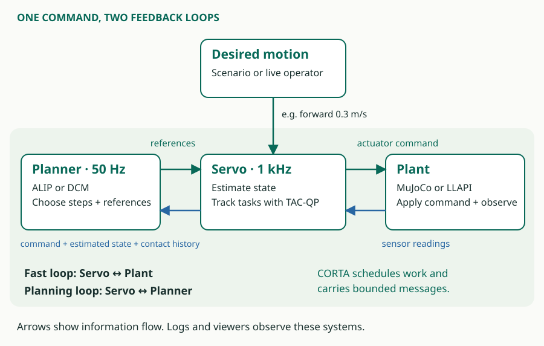
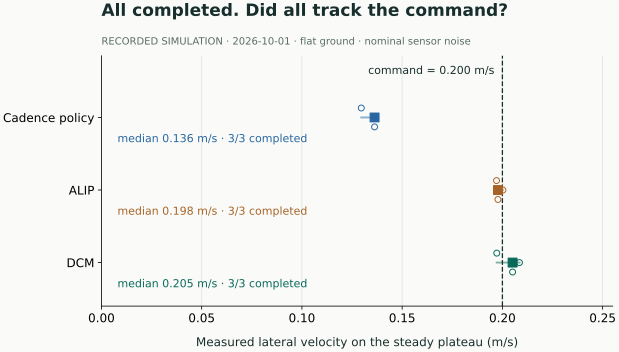

Lab 1 · Did the robot do what we asked?¶
Question: If every run completes, did every controller track the requested speed? Time: about 30–45 minutes. Setup: browser and calculator; no robot environment required.
By the end, you should be able to distinguish a request from a measured response, calculate a tracking shortfall and write a claim with an explicit evidence boundary.
Predict before inspecting the result¶
A simulated robot receives a command to move left at 0.200 m/s. Three controller configurations each run on three seeds. All nine runs complete. Write down whether you expect their measured velocities to be the same, and whether completion is enough to conclude that they tracked the command.
Follow the request¶

Label three boundaries in your own words: where the requested travel speed enters, where a foot trajectory is produced and where the robot's response becomes an observation. Read the handbook's walking-command explanation if you need a hint. You do not need to understand the planner equations for this lab.
Read the recorded experiment¶


The CSV's cmd_vy is the requested lateral velocity in m/s; vy is a retained plateau mean for that run. Positive lateral motion is left in this selected example. Each row is a run summary, not a time sample. seed identifies the experiment's random seed, and completed records scenario completion.
| Configuration | Seed 0, m/s | Seed 1, m/s | Seed 2, m/s |
|---|---|---|---|
| Policy | 0.129616 | 0.136660 | 0.136238 |
| ALIP | 0.197065 | 0.200260 | 0.197787 |
| DCM | 0.197195 | 0.208508 | 0.205089 |
Sort the three policy velocities and select the middle value. Then calculate:
Worked calculation · open after trying it
The median policy velocity is 0.136238 m/s. Its shortfall is 0.063762 m/s, or approximately 31.9% of the 0.200 m/s command. The three runs completed, while their median plateau speed remained below the request. The ALIP and DCM medians are 0.197787 and 0.205089 m/s respectively. These are historical scenario measurements.
Investigate the evidence boundary¶
Answer these questions using the figure and CSV:
- Which configuration has the smallest absolute difference between its median velocity and the command?
- What variation is visible across the three seeds? Does three seeds on one motion establish general reliability?
- Can a plateau mean tell you the peak velocity, stopping time or instantaneous tracking error?
- Can these data explain why the policy was slower? What additional signal would help investigate one possible explanation?
Check your interpretation
ALIP has the closest median in this selection. Neither the medians nor scenario completion establish the time history, stopping quality, actuator margin or a causal explanation. For example, investigating actuator limitation would need time-aligned command, actual motion and actuator-use data. The result applies to these historical configurations and selected conditions.
The source capsule records provenance and extraction. Its reduced data support this reading exercise even when the original simulation environment is unavailable. The current app's validation remains the source for current behavior.
Submit and explain¶
Use the short report outline. Submit an annotation identifying the command, one measured result and the historical conditions; show your shortfall calculation; and write two sentences separating what you observed from what remains unknown.
You have completed the lab when you can reproduce the calculation, explain why all nine completions do not settle the tracking question and name one additional measurement you would request. An optional extension is to calculate the median absolute tracking error for each configuration from the three per-run errors and explain how it differs from the absolute error of the median.
docs/guided-labs/01-read-an-experiment.mdBuilt from
e457e5630701 and this checkout's local edits. Owner contracts and validation determine implemented behavior and demonstrated limits.